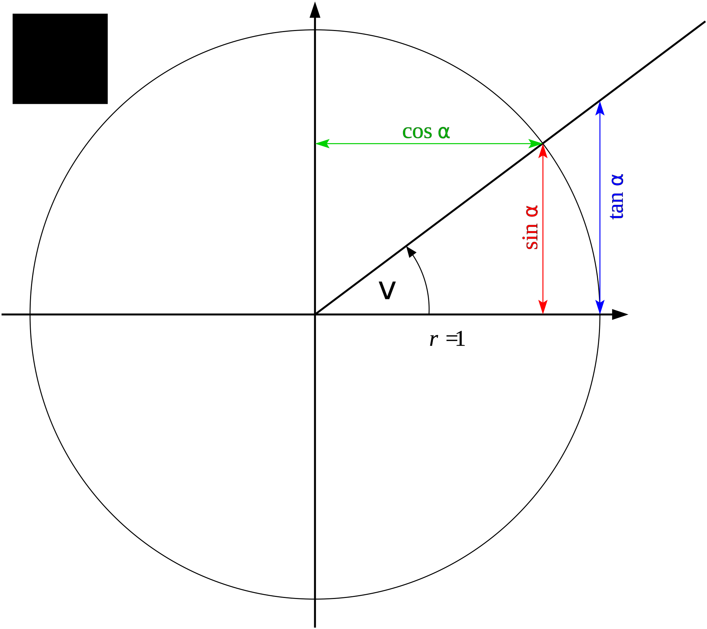

Formålet med denne emneopgave er at udlede cosinus, sinus og tangens, sam at vise hvordan det kan omsættes sinus relationen. Derefter vil jeg vise nogle praktiske eksempler på hvordan det kan anvendes.
Teorigennemgang
For at kunne arbejde med retvinklede trekanter vil vi her tage udgangspunkt i en vilkårlig trekant (TABC). Af denne trekant udleder vi ligedannet trekant T'A'B'C', hvorom det gælder at c' = 1.
Ved ligedannethed forstås, at trekantens vinkler er de samme, og at alle længder i trekanten er forholdsvis lige lange dvs forlænget med konstanten k:
Da k = c kan vi udlede følgende:
Derudover gælder:
I en retvinklet trekant kalder man de to modestående sider (retvinklede sider) for kateter. For at adskille dem kalder man den der ligger op mod vinklen A for den hosliggende og den der ligger væk fra som den modstående. Den sidste side kalder hypotenusen
Her kan så udledes huskreglerne:
Enhedscirklen
Enhedscirklen er defineret ved at radius = 1. I denne enhedscirkel kan

Teorigennemgangen er en kort skriftlig og fyldestgørende gennemgang af matematikken der ligger bag de formler der anvendes. Det betyder at der skal være:
En matemtatisk forklaret gennemgang af hvordan de anvendte formler bliver udredt, forklaret ved hjælp ligninger, grafer, illustrationer, screenshots ...
beskrive hvordan formlens elementer kan anvendes,
f.eks. i y = ax+b hvor a er hældningskoefficienten og b er skæringspunkt med yaksen
forklarende eksempler på hvor og hvordan formlerne anvendes
Anvendelse i HHX sammenhæng
Giv eksempler på hvordan matematikken kan anvendes i en økonomisk og eller handelssammenhæng. Det kan gøres ved at beskrive scenarier, hvor matematikken kan anvendes til at beskrive og/eller forudsige noget.
Konklusion og perspektivering
Enhver skriftlig opgave skal afsluttes med en konklusion, hvor man sætter ord på hvad det man har arbejdet med i opgaven kan anvendes og måske også hvor det ikke kan anvendes. Konklusions delen handler kun om det man konkret har arbejdet med i opgaven.
Ofte kan man også se perspektiver f.eks. mulige anvendelsesområder man ikke har beskrevet og undersøgt i opgaven, i anvendelsen af matetikken. Det hører under perspektiveringen.
Bilag
Bilagene kan indeholde skemaer, tabeller og grafer, som ikke er nødvendige for at læse emneopgaven, men er ”nice to have”.